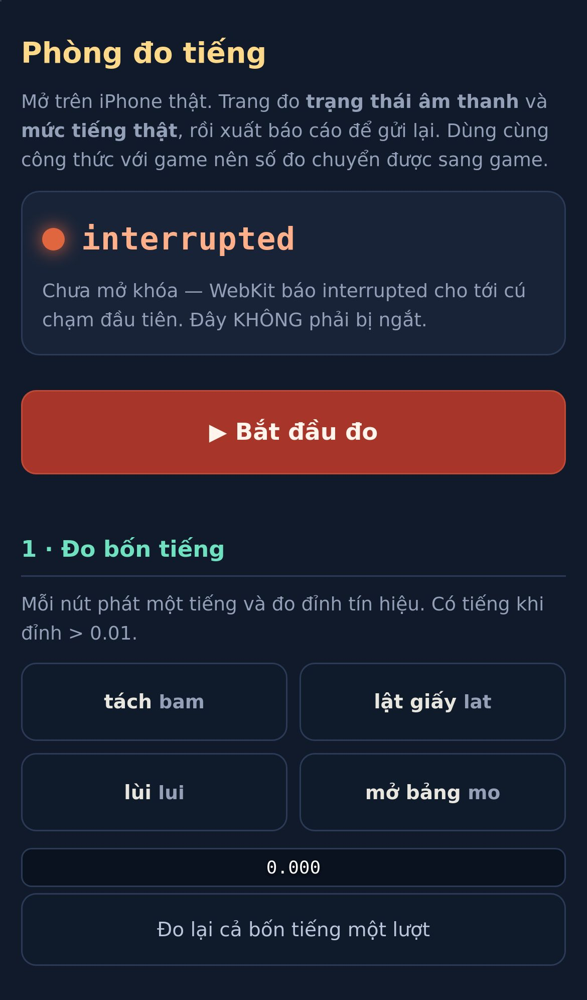
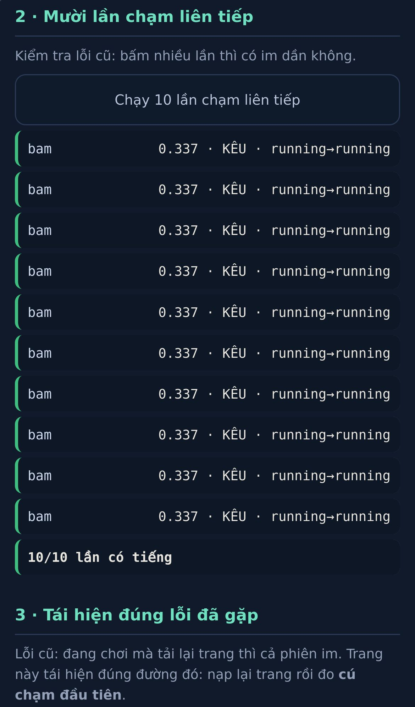
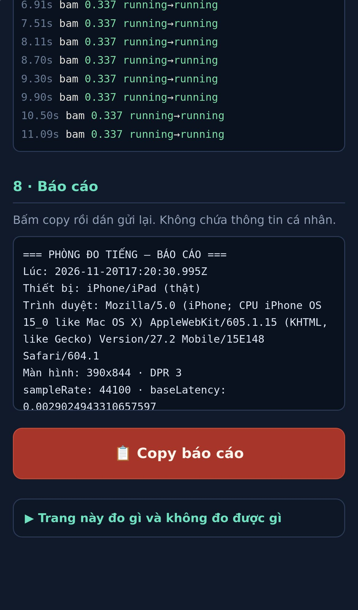

Trang đo để anh tự kiểm trên iPhone thật — và để tôi thấy được chỗ tôi mù
Mở phòng đoTôi sửa được lỗi "bấm lần sau không kêu" và anh đã xác nhận chạy đúng. Nhưng còn một chỗ
tôi không tự kiểm được: máy giả lập trên máy tính không mô phỏng trạng thái
interrupted của iPhone — trạng thái xảy ra khi có cuộc gọi tới hoặc ứng dụng
khác chiếm loa.
Trang này để anh đo trên máy thật, rồi gửi lại số đo. Tôi sẽ thấy chính xác tiếng im ở trạng thái nào, không phải đoán nữa.
1 Mở trang, bấm ▶ Bắt đầu đo. Đây là cú chạm mở khóa âm thanh, giống nút "Vào game" trong game.
2 Bấm thử mấy nút đo: bốn tiếng, rồi 10 lần chạm liên tiếp. Cái nào cũng hiện số và chữ KÊU/IM.
3 Làm mấy việc ở mục 5 (khoá màn hình, mở app khác, nghe nhạc…), sau mỗi việc quay lại bấm một tiếng. Cuối cùng bấm 📋 Copy báo cáo rồi dán gửi tôi.

interrupted — nhưng đó chỉ là "chưa mở
khóa", trang ghi rõ để không hiểu nhầm| Đo | Cách làm |
|---|---|
| Trạng thái âm thanh | Bắt mọi lần đổi trạng thái, ghi kèm mốc thời gian |
| Mức tiếng thật | Analyser móc song song vào loa chung — không cắt đường tiếng, nên số đo là số thật |
| Số lần có tiếng | Đếm tự động, đỉnh > 0.01 là có tiếng |
| Hồi phục sau khi treo / thu hồi | Nút thử riêng cho từng trạng thái |

interrupted — nhưng đó chỉ là "chưa có cú chạm nào", không phải bị
ngắt phiên âm thanh. Nếu để nguyên, báo cáo sẽ ghi "CÓ XẢY RA interrupted" và làm
tôi đi sai hướng.

interruptedĐó cũng là thông tin có ích: nghĩa là lỗi của anh không phải do bị ngắt phiên âm thanh, mà do nguyên nhân khác — và số đo sẽ chỉ ra nguyên nhân nào.